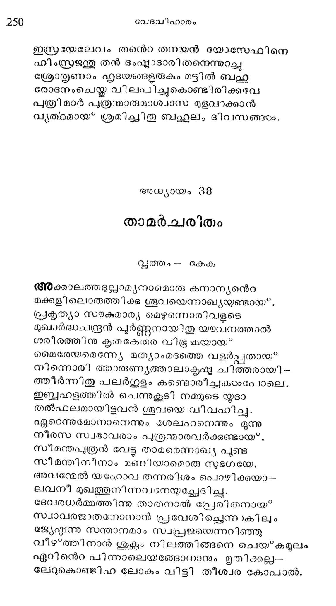
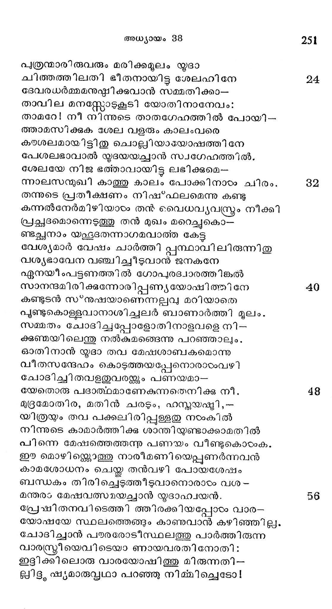
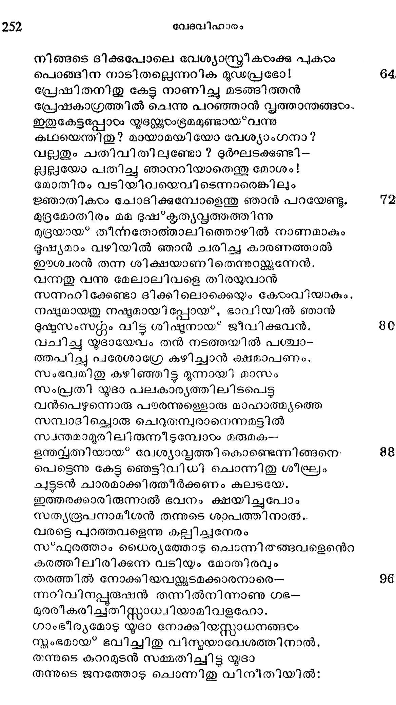
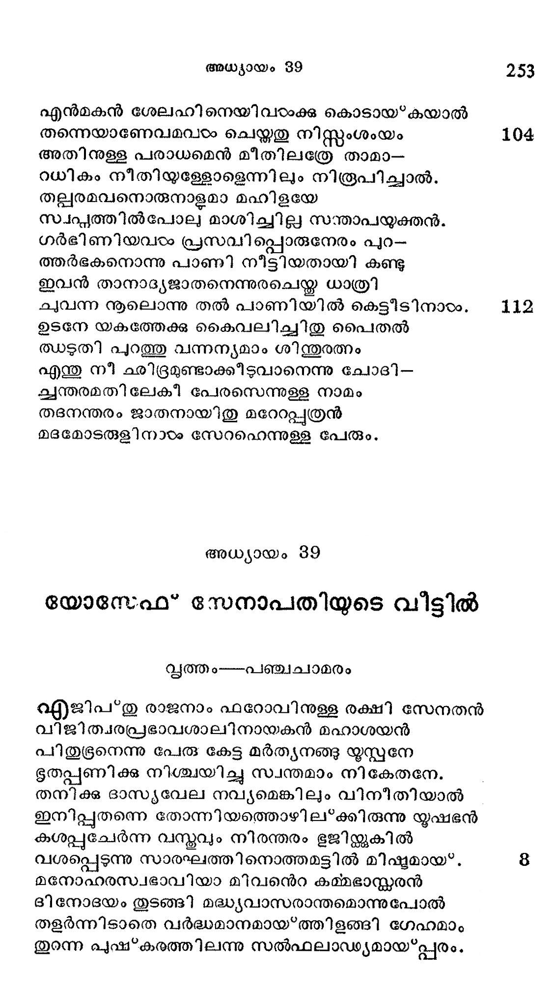

താമര്ചരിതം
വൃത്തം -- കേക
അക്കാലത്തഭല്ലാമ്യനാമൊരു കനാന്യന്െറ
മക്കളിലൊരുത്തിക്കു ശൂവയെന്നാഖ്യയുണ്ടായ*.
പ്രകൃത്യാ സഴകേമാര്യ മെഴുന്നൊരിവളടെ
മുഖാര്ദ്ധചന്ദ്രന് പൂര്ണ്ണനായിതു യയവനത്താല്
ശരീരത്തിനു കൃതകേതര വിഭൂഷയായ:
മൈരേയമെന്നേ്യേ മത്യാംമദത്തെ വളര്പ്പതായ*
നിന്നൊരി ത്താരുണ്യത്താലാകൃഷ്ട ചിത്തരായി --
ത്തീര്ന്നിതു പലര്ഗുളം കണ്ടൊരിച്ചകഠംപോലെ.
ഇബ്ബഹളത്തില് ചെന്നുകൂടി നമ്മുടെ യൂദാ
തല്ഫലമായിട്ടുവന് ശൂവയെ വി വഹിച്ച.
ഏറെന്നുമോനാനെന്നും ശേലഹനനെന്നും മൂന്നു
നീരസ സ്വഭാവരാം പൃത്രന്മാരവര്ക്കുണ്ടായ".
സീമന്തപുത്രന് വേട്ട താമരെന്നാഖ്യ പൂണ്ട
സീമന്തിനീനാം മണിയാമൊരു സുഭഗധേ.
അവന്മേല് യഹോവ തന്നരിശം പൊഴിക്കയാ--
ലവനീ മുഖത്തുനിന്നവദനേയുച്ഛേദിച്ചു.
ദേവരധര്മ്മത്തിന്നു താതനാല് പ്രേരിതനായ"
സ്വാവരജാതനോനാന് പ്രവേശിച്ചെന്നാകിലും
ജേേഷ്ടന്നു സന്താനമാം സ്വപ്രജയെന്നറിഞ്ഞു
വീഴ*ത്തിനാന് ശുക്രം നിലത്തിങ്ങനെ ചെയ*കമൂലം
ഏറിനന്െറ പിന്നാലെയങ്ങോനാനും മൃതിക്കല്ല--
ലേറുകൊണ്ടിഹ ലോകം വിട്ടി തീശ്വര കോപാല്.

പുത്രന്മാരിരുവരും മരിക്കമൂലം യൂദാ
ചിത്തത്തിലതി ഭീതനായിട്ട ശേലഹിനേ 24
ദേവരധര്മ്മമനുഷ്ഠിക്കവാന് സമ്മതിക്കാ-.
താവില മനസ്ണലോടുകൂടി യോതിനാനേവം:
താമറേ! നീ നിന്നുടെ താതഗേഹത്തില് പോയി.--
ത്താമസിക്കുക ശേല വളരും കാലംവരെ
കയശലമായിട്ടിതു ചൊല്ലിയായോഷത്തിനേ
പേശലഭാവാല് യൃദയയച്ചാന് സ്വഗേഹത്തില്.
ശേലയേ നിജ ഭത്താവായിട്ട ലഭിക്കമെ--
ന്നാലസനുഖി കാത്തു കാലം പോക്കിനാടരം ചിരം. 82
തന്നുടെ പ്രതീക്ഷണം നിഷ*ഫലമെന്നു കണ്ടു
കന്നല്നേര്മിഴിയാടം തൻ വൈധവുൃവ്്രം നീക്കി
പ്രച്ഛദമൊന്നെടുത്തു തന് മുഖം മറെച്ചുകൊ-
ണ്ടച്ലനാം യഛൂഭൂദതന്നാഗമവാത്ത കേട്ട
വേശ്യമാര് വേഷം ചാര്ത്തി പ്പസ്ഥാവിലിരുന്നിതു
വശ്യഭാവേന വഞ്ചിച്ചീടുവാന് ജനകനേ
ഏനയീംപട്ടണത്തില് ഗോപുരദ്വാരത്തിങ്കല്
സാനന്ദമിരിക്കുന്നോരിപ്പണ്യയോഷിത്തിനേ 40
കണ്ടുടന് സ*്നുഷയാണെന്നല്പവു മറിയാതെ
പൂണ്ടുകൊള്ളവാനാശിച്ചലര് ബാണാര്ത്തി മൂലം.
സമ്മതം ചോദിച്ചപ്പോളോതിനാളവളെ നി--
ക്കുണ്ജയിലെന്തു നല്കുമങ്ങെന്നു പറഞ്ഞാലും.
ഓതിനാന് യൂദാ തവ മേഷശാബകമൊന്നു
വീതസന്ദേഹം കൊടുത്തയപ്പേനൊരാരംവഴി
ചോദിച്ചി തവളതുവരള്ക്ും പണയമാ--
യേതൊരു പദാത്ഥമാണേകുന്നതെനിക്ക നീ, 48
മുമോതിര, മതിന് ചരടും, ഹസ്തയഷ്ടി, --
യിത്രയയം തവ പക്കലിരിപ്പള്ളതു നഠംകില്
നിന്നുടെ കാമാര്ത്തിക്കു ശാന്തിയണ്ടാക്കാമതില്
പിന്നെ മേഷത്തെത്തന്നു പണയം വീണ്ടുകൊടംക.
ഈ മൊഴികല്കലൊത്തു നാരീമണിയെപ്പുണര്ന്നവന്
കാമശോധനം ചെയ്ത തന്വഴി പോയശേഷം
ബന്ധകം തിരിച്ചെടുത്തീടുവാനൊരാടം വശ-
മന്തരം മേഷവത്സമയച്ചാന് യുദാഹ്വയന്. 6
പ്രേഷിതനവിടെത്തി ത്തിരക്കിയപ്പോഠം വാര-
യോഷയേ സ്ഥലത്തെങ്ങും കാണുവാന് കഴിഞ്ഞില്ല.
ചോദിച്ചാന് പയരരോടീസ്ഥലത്തു പാര്ത്തിരുന്ന
വാരസ്്രീയെവിടെയാ ണായവരതിനോതി:
ഇട്ദിക്കിലൊരു വാരയോഷിത്തു മിരുന്നതി--
ല്ലിളം ഷ്യമാരുസ്കഥാ പറഞ്ഞു നിമ്മിച്ചെടോ!

നിങ്ങടെ ദിക്കുപോലെ വേശ്യാസ്ത്രീകയാക്കു പുകരം
പൊങ്ങിന നാടിതല്ലെന്നറിക മുഡപ്രഭോ!
പ്രേഷിതനിതു കേട്ട നാണിച്ചു മടങ്ങിത്തന്
പ്രേഷകാഗ്രത്തില് ചെന്നു പറഞ്ഞാന് വ്ൃത്താന്തങ്ങംം.
ഇതുകേട്ടപ്പോടം യൃദയ്ക്കുംഭ്രമമുണ്ടായ*വന്നു
കഥയെന്തിതു? മായാമയിയോ വേശ്യാംഗനാ?
വല്ലതും ചതിവിതിലുണ്ടോ ? ദുര്ഘടക്കുണ്ടി-
ല്ല്ലയോ പതിച്ചു ഞാനറിയാതെന്തു മോശം!
മോതിരം വടിയിവയെവിടെന്നാരെങ്കിലും
ജ്ഞാതികഠം ചോദടിക്കുമ്പോളെന്തു ഞാന് പറയേണ്ടു.
മു്രമോതിരം മമ ദുഷ്കൃത്യവ്തത്തത്തിന്നു
മുദ്രയായ* തീന്നതോത്താലിത്തൊഴിൽല് നാണമാകും
ഭുഷ്യമാം വഴിയില് ഞാന് ചരിച്ച കാരണത്താൽ
ഇശ്വേരന് തന്ന ശിക്ഷയാണിതെന്നുറത്തന്നേന്.
വന്നതു വന്നു മേലാലിവളെ തിരയുവാന്
സന്നഹിക്കേണ്ടാ ദിക്കിലൊക്കെയു കോടംവിയാകും.,
നഷ്ടമായതു നഷ്ടമായി പ്പോയ്*, ഭാവിയില് ഞാന്
ദുഷ്ടസംസ്റകം വിട്ട ശിഷ്ടനായ* ജീവിക്കുവന്.
വചിച്ചു യൂദായേവം തന് നടത്തയില് പശ്ചാ-
തപിച്ചു പരേശാഗ്രേ കഴിച്ചാന് ക്ഷമാപണം.
സംഭവമിതു കഴിഞ്ഞിട്ട മൂന്നായി മാസം
സംപ്രതി യൂദാ പലകാര്യത്തിലിടപെട്ട
വന്പെഴുന്നൊരു പരരന്നുള്ളൊരു മാഹാത്മ്യത്തെ
സമ്പാദിച്ചൊരു ചെറുതമ്പുരാനെന്നമട്ടില്
സ്വന്തമാമൂരിലിരുന്നീടുമ്പോടം മരുമക--
ഉന്തവ്വതതിയായ* വേശ്യാവ്ൃത്തികൊണ്ടെന്നിങ്ങനെ:
പെട്ടെന്നു കേട്ട ഞെട്ടിവിധി ചൊന്നിതു ശീഘ്രം
ചുട്ടടന് ചാരമാക്കിത്തീര്ക്കണം കുലടയേ.
ഇത്തരക്കാരിരുന്നാല് ഭവനം ക്ഷയിച്ചുപോം
സത്രൂപനാമീശന് തന്നുടെ ശാപത്തിനാത..
വരട്ടെ പുറത്തവളെന്നു കല്ലിച്ചനേരം
സ*ഫുരത്താം ധൈര്യത്തോട ചൊന്നി തങ്ങവളെന്െറ
കരത്തിലിരിക്കുന്ന വടിയും മോതിരവും
തരത്തില് നോക്കിയവന്റ്കുടമക്കാരനാരെ-
ന്നറിവിനപ്പുരഷന് തന്നില്നിന്നാണു ഗഭ-
മുരരീകരിച്ചതിസ്റ്റാധ്വധിയാമിവളഹോ.
ഗാംഭീര്യമോട യൂദാ നോക്കിയസ്്റാധനങ്ങടം
സ്ലംഭമായ* ഭവിച്ചിതു വിസ്വയാവേശത്തിനാല്.
തന്നുടെ കുറാമുടന് സമ്മതിച്ചിട്ടു യൂദാ
തന്നുടെ ജനത്തോടു ചൊന്നിതു വിനീതിയില്?

എന്മകന് ശേലഹിനെയിവരംക്കു കൊടായ൦കയാല്
തന്നെയാണേവമവംം ചെയ്തതു നിസ്റ്റംശംയം 104
അതിനുള്ള പരാധമെന് മീതിലത്രേ താമാ--
റധികം നീതിയുള്ളോളെന്നിലും നിരൂപിച്ചാൽ.
തല്ലരമവനൊരുനാളമാ മഹിളയേ
സ്വപ്പത്തില്പോല) മാശിചില സന്താപയുക്തന്.
ഗര്ഭിണിയവരടം പ്രസവിപ്പൊരുനേരം പുറ-
തആര്ഭകനൊന്നു പാണി നീട്ടിയതായി കണ്ടു
ഇവന് താനാദ്യജാതനെന്നുരചെയ്ത ധാത്രി
ചുവന്ന നൂലൊന്നു തല് പാണിയില് കെട്ടീടിനാരം. 118
ഉടനേ യകത്തേക്കു കൈവലിച്ചിരു പൈതല്
ത്ധഴുതി പുറത്തു വന്നന്യമാം ശിതന്തുരത്നം
എന്തു നീ ഛിദ്രമുണ്ടാക്കീടുവാനെന്നു ചോദി-
ച്വന്തരമതിലേകീ പേരസെന്നുള്ള നാമം
തദനന്തരം ജാതനായിതു മറേറപ്പുര്രന്
മദമോടരുളിനായം സേറഹെന്നുള്ള പേരും.
